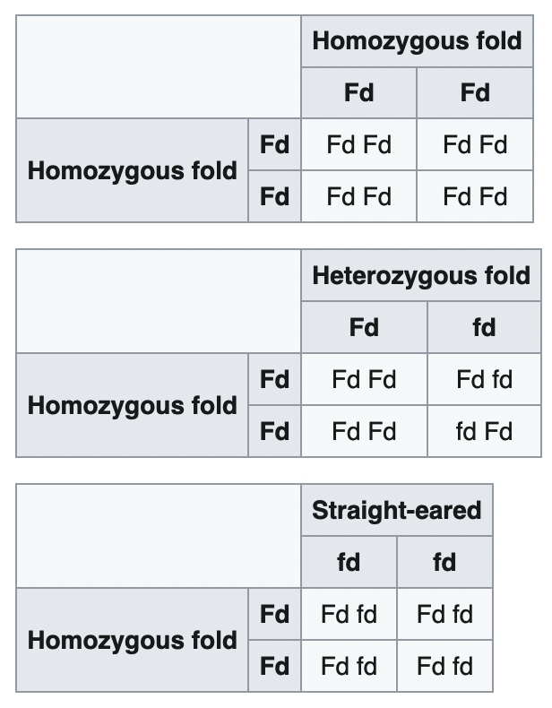
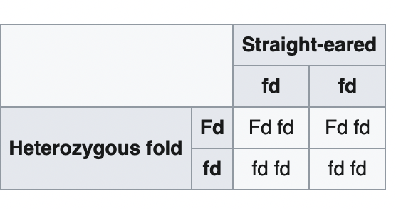
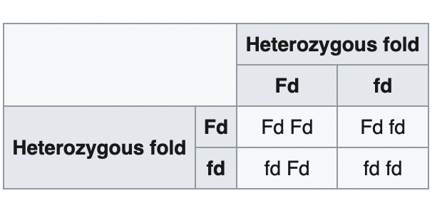

An early study suggested that the fold is inherited as an autosomal dominant trait.[8] A later study suggested an incomplete dominance.[9] A cat with folded ears may have either one (heterozygous) or two copies (homozygous) of the dominant fold gene (Fd). A cat with normal ears should have two copies of the normal gene (fd).
Mating a homozygous fold with any cat will produce all folds, but because homozygous folds are prone to severe health issues, breeding for them is generally considered unethical. A homozygous to normal mating will produce only heterozygous folds but presumably in ethical breeding programs, there will be no homozygous cats available to breed from.
The only generally accepted breeding gives a 50% chance of producing heterozygous folds and 50% chance of producing progeny with normal genes.
There is suspicion that some non-fold litters are genetically heterozygous folds but because of very low expression of the gene, appear to be straight-eared. Such kittens may develop folded ears initially which then straighten back out. Because of this there are suggestions by some breeders to avoid mating Folds with straight-eared Scottish Folds but only use British Shorthairs (BSH) as outcross.[10][11] If Scottish Shorthairs are to be used, they should be test mated to a BSH to make sure that they are not genetically folds.[10] If such apparent straight-eared cats are mated with a fold, there is a 75% chance of folds (25% homozygous folds, 50% heterozygous folds) and 25% chance of straight ears.
In 2016 the genetic mutation responsible for the folded ears and the OCD was identified. It was found in a gene encoding a calcium permeable ion channel, transient receptor potential cation channel, subfamily V, member 4 (TRPV4).[12] The mutation is a V342F substitution (c.1024G>T) in the fifth ankyrin repeat within the N-terminal cytoplasmic domain. It was also found in a human patient with metatropic dysplasia.[13]